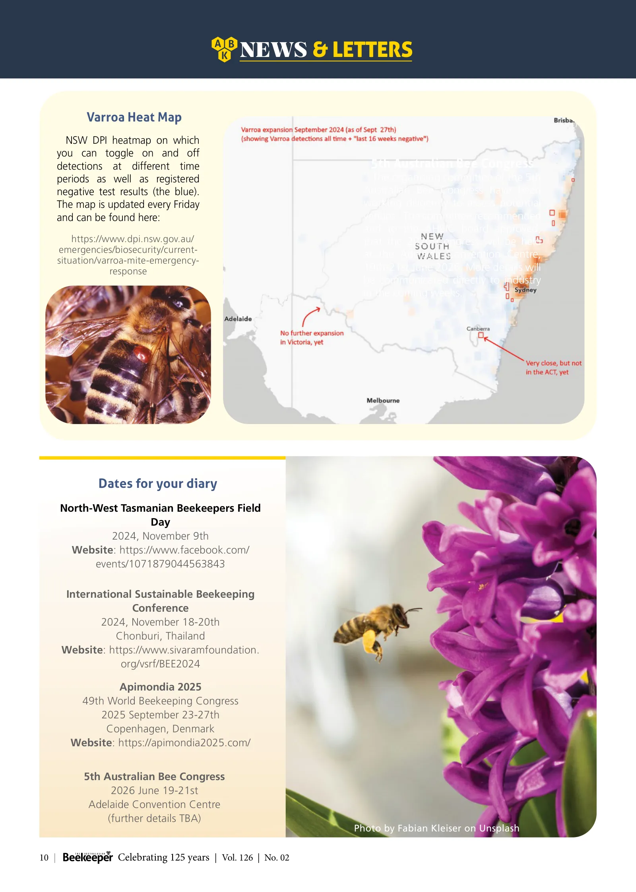

NEWS & LETTERS
Dates for your diary
North-West Tasmanian Beekeepers Field
Day
2024, November 9th
Website: https://www.facebook.com/
events/1071879044563843
International Sustainable Beekeeping
Conference
2024, November 18-20th
Chonburi, Thailand
Website: https://www.sivaramfoundation.
org/vsrf/BEE2024
Apimondia 2025
49th World Beekeeping Congress
2025 September 23-27th
Copenhagen, Denmark
Website: https://apimondia2025.com/
5th Australian Bee Congress
2026 June 19-21st
Adelaide Convention Centre
(further details TBA)
NSW DPI heatmap on which
you can toggle on and off
detections at different time
periods as well as registered
negative test results (the blue).
The map is updated every Friday
and can be found here:
https://www.dpi.nsw.gov.au/
emergencies/biosecurity/current-
situation/varroa-mite-emergency-
response
5th Australian Bee Congress
The organising committee of the 5th
Australian Bee Congress have been
working diligently to assess potential
venues. The committee recommended
and to the AHBIC board approved,
that the 2026 Congress will be held
at the Adelaide Convention Centre,
19th-21st June 2026. More details will
be communicated directly to industry
in the coming weeks.
Varroa Heat Map
Photo by Fabian Kleiser on Unsplash
10 |
Celebrating 125 years | Vol. 126 | No. 02